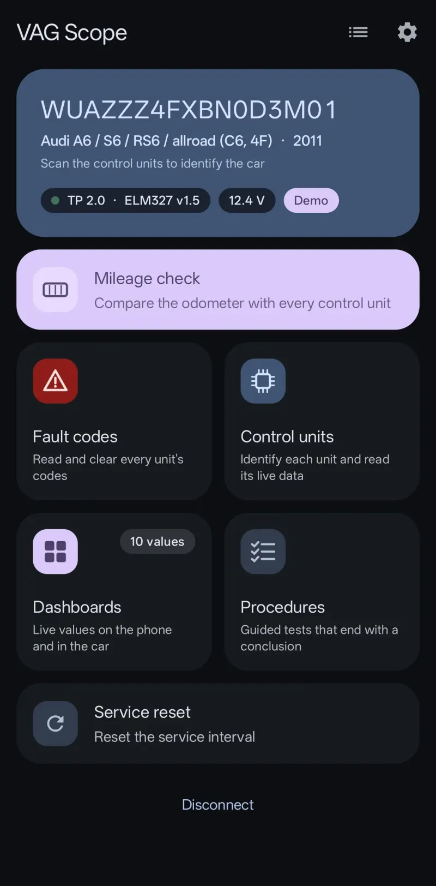
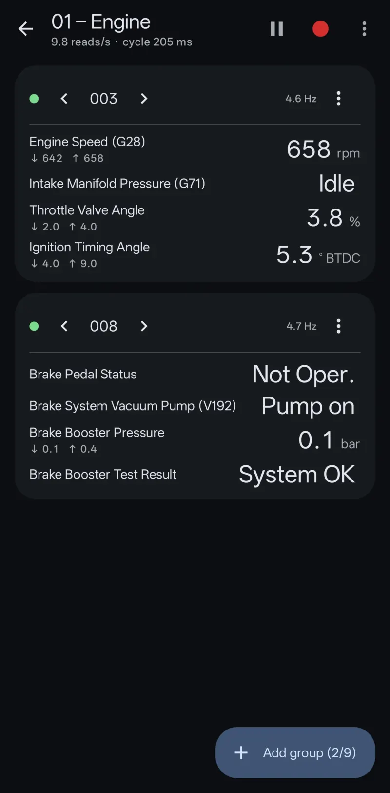
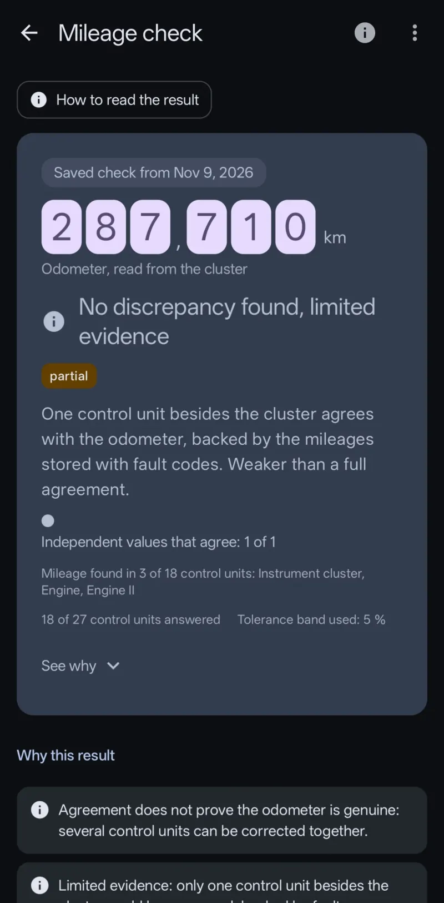
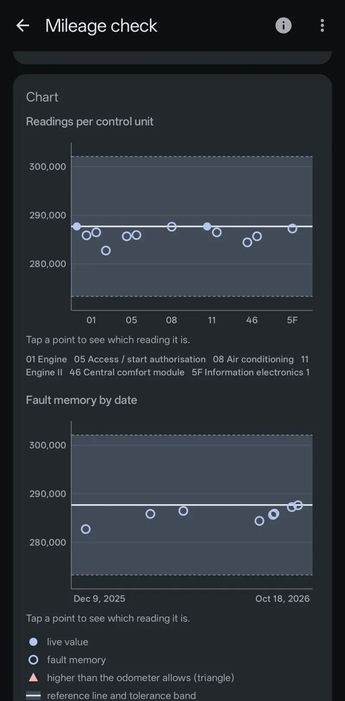
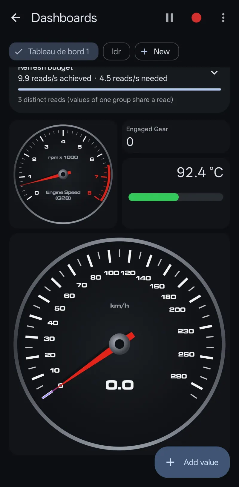
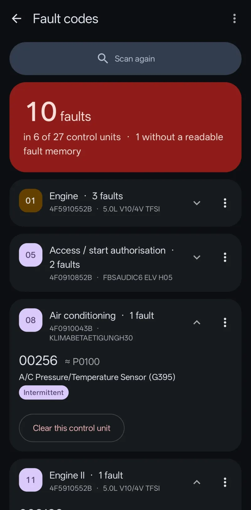
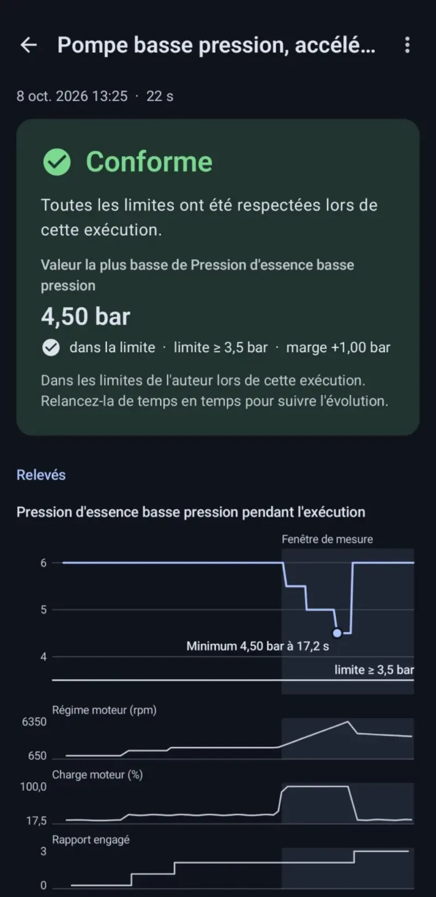
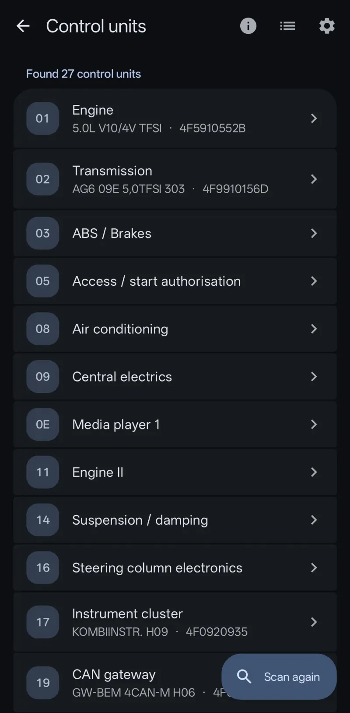
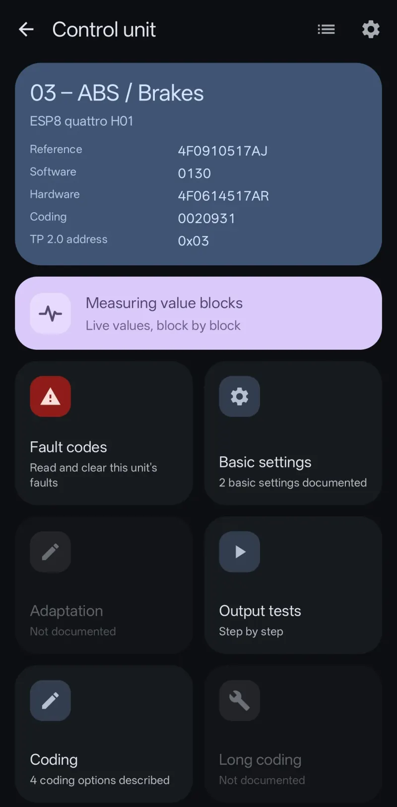
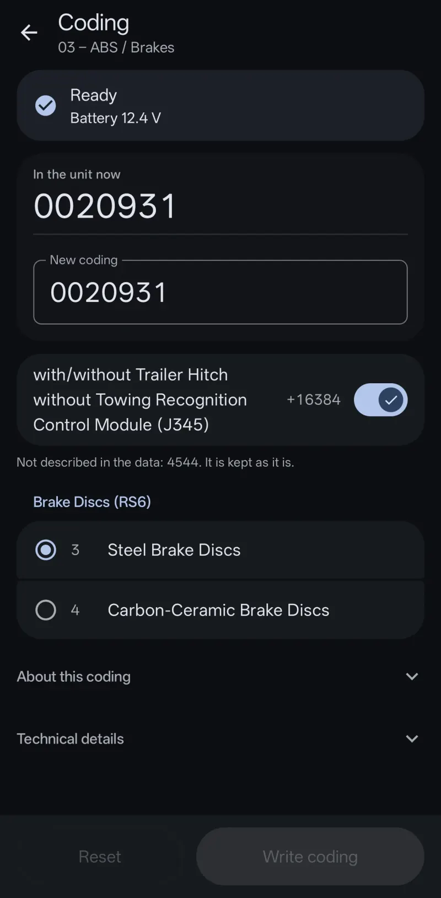

Check a used VW, Audi, Seat or Škoda before you buy.
VAG Scope compares the odometer with the distance stored in the car’s control units and shows its evidence. It also checks the VIN, reads fault codes and live data, and changes coding, from your phone and a Bluetooth ELM327 adapter. No account, no network.




Check the odometer against the car’s own memory.
VAG Scope reads the distance stored in every control unit that keeps one, compares it with the dashboard, and shows its working: which units agree, which do not, and the margin it allowed.
The VIN check does the same for the car’s identity: it compares the VIN on the windscreen, the data sticker and the body with the VIN stored in every control unit, and names any unit that comes from another car. Both checks give a PDF report.
Handy before you buy a used car. The result is a guide, never a guarantee, and it will not tell you a car is “genuine”.
VAG Scope
Real diagnostics for VW, Audi, Seat and Škoda, from a cheap Bluetooth adapter and your phone.
- Live data
- Up to nine measuring blocks at once, with min and max values, a 60-second chart and CSV logging.
- Dashboards
- Pin the single values you care about, on your phone or on the car screen through Android Auto. Apple CarPlay will follow with the iPhone version.
- Fault codes
- Every control unit, with status, freeze frames and plain texts. Clearing only after a backup and your confirmation.
- Guided procedures
- Step-by-step tests written by the community: measure, compare, conclude, then share the report.
-

Dashboards you build yourself -

Fault codes with freeze frames -

Procedures with a shareable report
On the car screen too
Show up to four live values through Android Auto, each with its min and max. Apple CarPlay is coming with the iPhone version.
Works with a Bluetooth ELM327 adapter on cars using TP 2.0 (about 2004–2010) or UDS (about 2012 and later). Android 9 or later, in English and French; an iPhone version will follow. Tested on real cars, from a 2010 Audi RS6 (TP 2.0) to newer UDS cars.
Control units & VAG Coding
Scan the control units of your car, then change coding and long coding, adaptations, run basic settings (with guided functions) and output tests from your phone. Each change asks first, is backed up and read back. Works on 2004–2010 (TP 2.0) cars and on newer (UDS) cars.
-

Scan and detect all installed control units -

Access adaptations, basic settings, output tests & coding -

Tweak module features with human-readable descriptions
Recommended adapters
VAG Scope talks to your car through a Bluetooth ELM327 adapter. The vLinker MC+ is the one it was built and tested with.
-
vLinker MC+
The adapter this app was built with
-
vGate iCar Pro 2S
The affordable alternative
Questions before you buy
Which cars does VAG Scope work with?
Volkswagen, Audi, Seat and Škoda cars that use TP 2.0 (about 2004–2010) or UDS (about 2012 and later), and cars that mix both. It does not work on the newest platforms that use 29-bit diagnostic ids only, such as the ID. electric models and the Golf 8 generation.
Which adapter do I need?
A Bluetooth ELM327 adapter that plugs into the car’s OBD socket. On Android, Classic Bluetooth and BLE adapters both work. The app was built and tested with a vLinker MC+. The iPhone version, when it comes, will need a BLE adapter.
Can it tell me if the mileage has been tampered with?
It compares the odometer with the distance stored in every control unit that keeps one, and shows which units agree, which do not, and the margin it allowed. A disagreement is a reason to look closer. An agreement is not proof: someone can change several units. Treat the result as one clue among others, next to the service history and an inspection.
Does it need internet or an account?
No. VAG Scope has no internet permission, no account, no advertising and no analytics. What your car says stays on your phone.
How much does it cost?
One payment on Google Play, €9.99 in the euro zone. No subscription, no in-app purchase, every feature included.
Is there an iPhone version?
It is coming later. Sign up at the top of this page to be told when it is out.
Can it damage my car?
Reading fault codes, live data and the mileage changes nothing. Every change, from clearing a fault to coding, asks for your confirmation first, is backed up and read back afterwards, and airbag and immobiliser units are never written. Never use the app while driving.
Your data stays with you.
VAG Scope has no internet permission, no account, no advertising and no analytics. Read the full privacy policy.